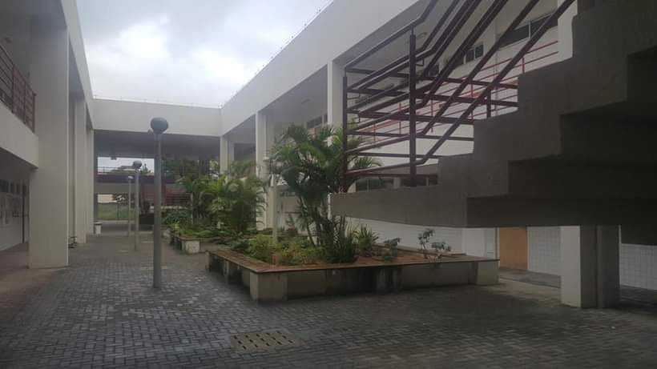
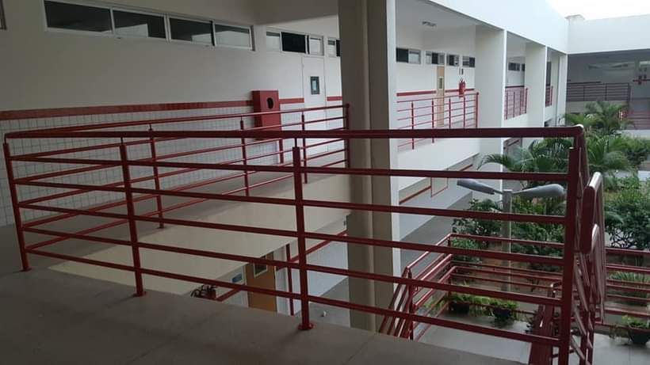
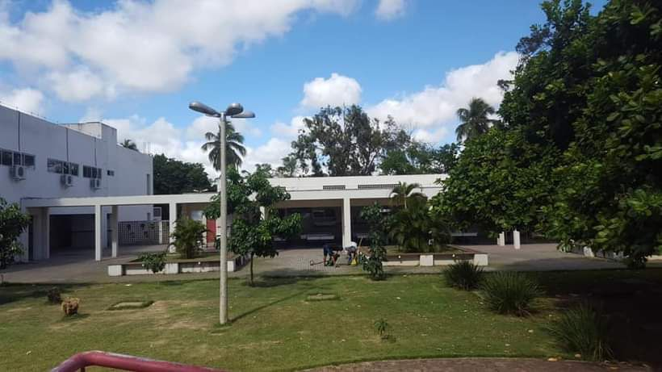

.png)
História
O CEEP Lourdinha Guerra, localizado em Nova Parnamirim, no município de Parnamirim, é uma escola pública de ensino médio integrado à educação profissional. A escola foi criada pelo governo do Rio Grande do Norte com o objetivo de ampliar o acesso ao ensino técnico de qualidade. Ela faz parte de uma política educacional que busca preparar os jovens tanto para o mercado de trabalho quanto para o ingresso no ensino superior. O nome “Lourdinha Guerra” homenageia uma figura importante na área da educação, reconhecida por sua contribuição social. Desde sua fundação, o CEEP funciona em regime de tempo integral, oferecendo ensino médio junto com cursos técnicos, além de projetos, atividades práticas e uso de laboratórios. Ensino médio integrado com curso técnico de redes e informática Formação profissional Preparação para faculdade Desenvolvimento de habilidades práticas Hoje, o CEEP Lourdinha Guerra é referência na região de Nova Parnamirim por oferecer uma educação mais completa, com foco tanto no conhecimento teórico quanto na prática.


